Stripe New Customer? Auto-Track in Airtable and Notify Your Team via Slack
A new customer signs up in Stripe. Their name sits in your payment dashboard — and nowhere else. Your team doesn't know, nobody starts onboarding, and you find out three days later when you happen to check. This Make.com Stripe automation fixes that instantly: the moment a new customer appears in Stripe, their details land in an Airtable client tracker and your team gets a Slack notification. No code, no manual entry, runs forever once built.
Why Stripe's Dashboard Isn't Enough for Client Tracking
Stripe is built for payments, not client management. It stores customer names and emails, but it doesn't notify your team when someone new signs up, track onboarding status, or let multiple people collaborate on client notes. If you're a freelancer or agency juggling 10-50 active clients, you need a dedicated tracker — and you need it updated automatically, not by someone remembering to copy-paste from Stripe every morning.
What This Stripe to Airtable Automation Does
When a new customer is created in Stripe, Make.com catches the event instantly via webhook and runs two actions: it creates a new record in your Airtable client tracker with the customer's name, email, Stripe ID, and signup date, then sends a formatted Slack message to your team's channel. The whole thing takes about 25 minutes to build.
How the Workflow Runs
| Step | What Happens | Tool |
|---|---|---|
| 1 | New customer is created in Stripe | Stripe Webhook (INSTANT) |
| 2 | Client record is added to Airtable with name, email, and date | Airtable |
| 3 | Team gets a Slack notification with client details | Slack |
Why Airtable Instead of Google Sheets for Client Tracking
Several tutorials on this site use Google Sheets for tracking — it's free and everyone knows it. But for client tracking specifically, Airtable is the better choice. Airtable gives you structured field types: an Email field that validates addresses, a Single Select dropdown for status tracking ("New", "Onboarding", "Active"), and a Date field that formats dates automatically. You can switch to a Kanban view to see your onboarding pipeline at a glance — drag clients from "New" to "Onboarding" to "Active" without editing cells. Google Sheets can log data, but it can't enforce structure. Airtable's free plan includes 1,000 records per base and up to 5 editors — more than enough for most service businesses tracking clients.
Create your free Airtable client tracker — no credit card needed. Try Airtable free →
Don't Use Slack? Alternatives That Work the Same Way
This guide uses Slack for team notifications, but Make.com supports any messaging tool. If your team doesn't use Slack, swap the last module for one of these — the rest of the workflow stays identical. Gmail: send a notification email to your team instead. Microsoft Teams: same concept as Slack, select the Teams module and pick your channel. Google Chat: if you're already in Google Workspace, this is the simplest swap.
Start building this automation for free on Make.com — no credit card needed. Start free on Make.com →
What You Need Before Starting
You'll need four things ready before opening Make.com. A Stripe account — sandbox mode works perfectly for testing (no real charges). An Airtable account with a base called "Client Tracker" containing a table called "Clients" with these columns: Name (text), Email (email), Stripe Customer ID (text), Plan (text), Amount Paid (currency), Date Joined (date), Status (single select with "New", "Onboarding", "Active"), and Notes (long text). A Slack workspace with a channel for notifications (this guide uses #new-client, you can name yours anything). And a free Make.com account.
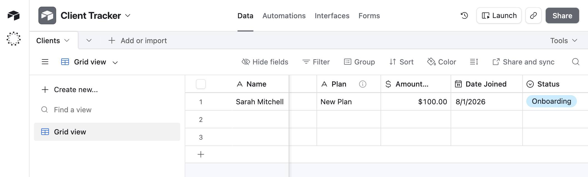
How to Build the Stripe to Airtable Client Tracker Automation
- Create a test customer in Stripe — open your Stripe Dashboard and switch to sandbox mode using the toggle in the top-right corner. Go to Customers and click "+ Add customer." Enter a name and email, then click "Add customer." You'll use this test customer to trigger the automation later.
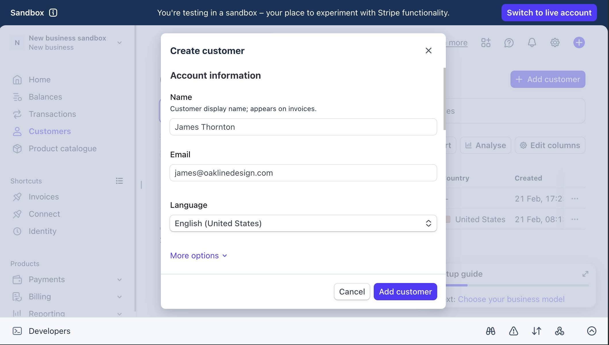
Make.com Stripe automation — Stripe sandbox Create customer dialog - Log in to Make.com and create a new scenario — click "Create a new scenario" on your dashboard. You'll see an empty canvas with a large purple + button in the center.
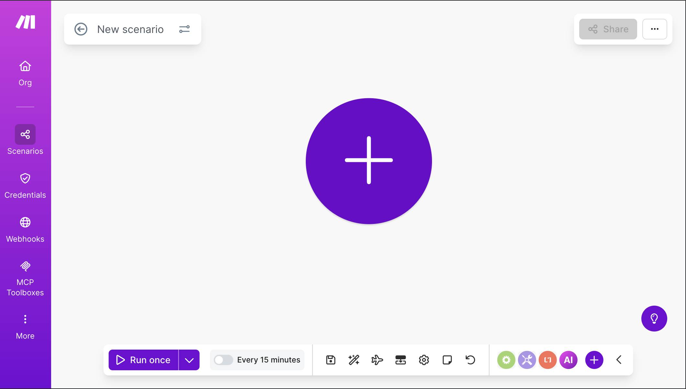
Make.com Stripe Airtable scenario — empty canvas ready to build - Click the + button and search for "Stripe" — select the Watch Events module. Click "Create a webhook" to set up the trigger. Connect your Stripe account using OAuth or API Key (copy your Secret key from Stripe → Developers → API keys — it starts with sk_test_ in sandbox mode). Set the Group to "Customer" and the Event to "Customer created." Click Save.
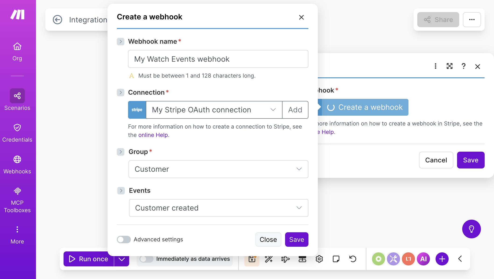
Make.com Stripe webhook — Group set to Customer, Event set to Customer created
4. The Stripe module is now on your canvas with the webhook connected — you'll see the webhook name in the module configuration and "Immediately as data arrives" in the bottom toolbar, confirming this is an INSTANT trigger.
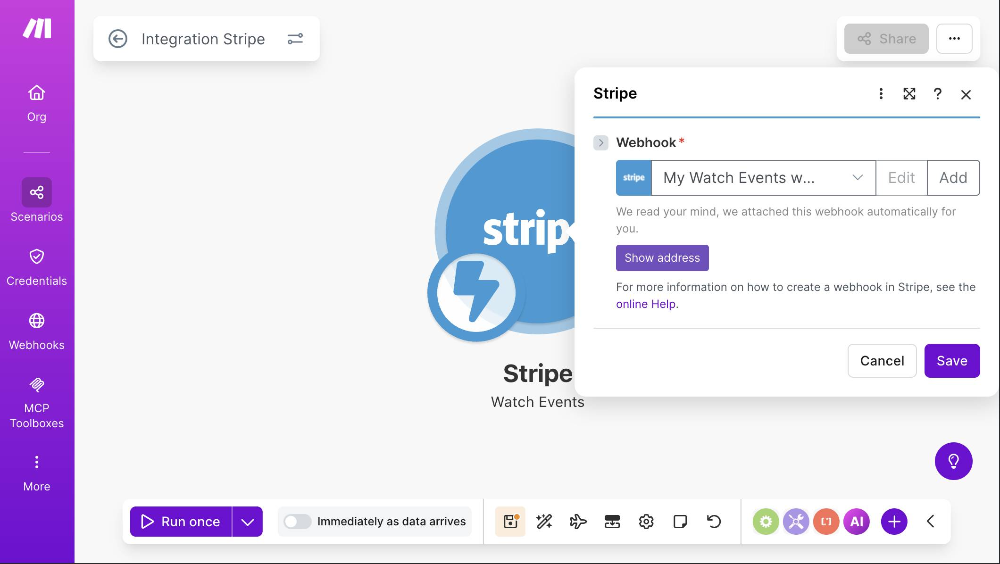
5. Click the + button to the right of the Stripe module, search for "Airtable" and select "Create a Record." Click "Create a connection" — Make.com will open a dialog where you select Airtable OAuth as the connection type. Name the connection anything (e.g. "My Airtable OAuth connection") and click Save. Airtable's authorization screen will open — grant Make.com access to your bases.
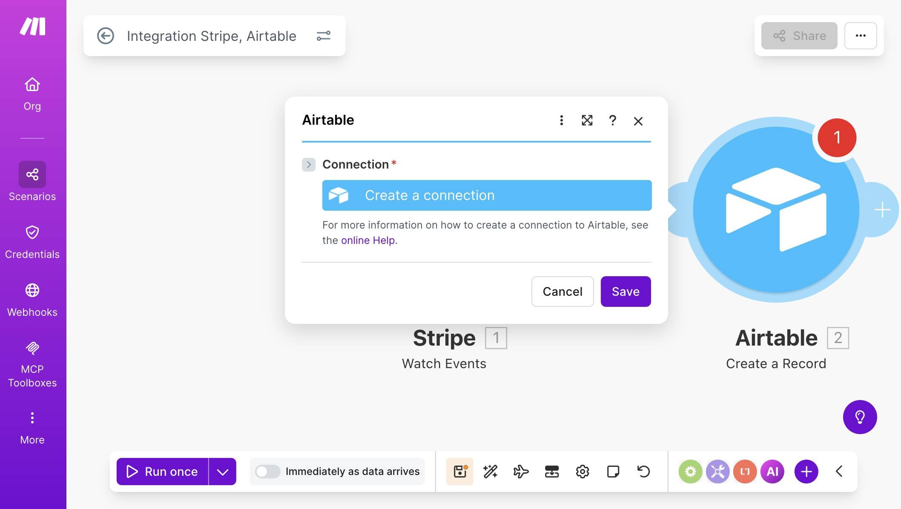
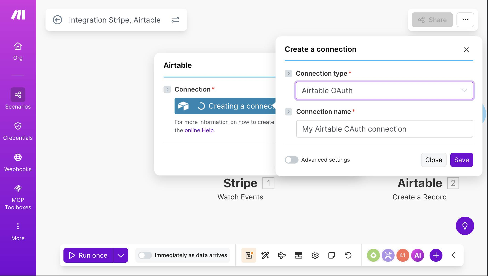
6. Once connected, select your Base ("Client Tracker") and Table ("Clients") from the dropdowns. Airtable fields will appear automatically. Map them from the Stripe trigger: Name to "1. Object: Name", Email to "1. Object: Email", and Stripe Customer ID to "1. Object: ID" (this starts with cus_ and is useful for reference).
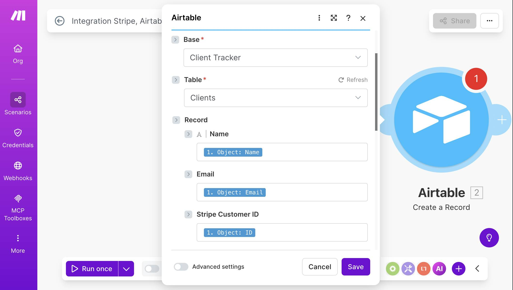
7. Scroll down to map the remaining fields. Leave Amount Paid empty — the customer.created event doesn't include payment data. For Date Joined, map "1. Object: Created" directly — Airtable converts the Stripe timestamp automatically, no formatDate function needed. For Status, click the "Map" toggle to enable manual input and type "New" — this sets every new client's status to "New" by default. Leave Notes empty — your team fills this in manually during onboarding.
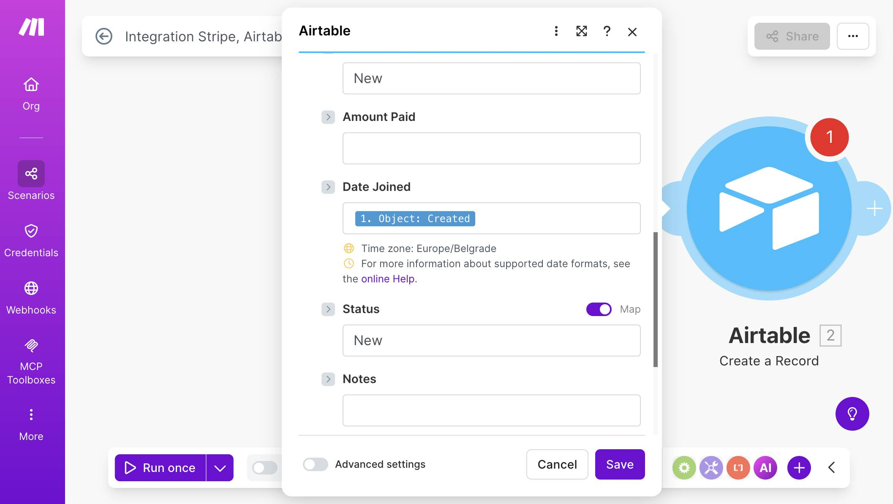
8. Add a Slack module — click the + button after Airtable, search for "Slack" and select "Send a Message." Connect your Slack workspace through OAuth. Set Channel Type to "Public channel" and select your #new-client channel. In the Text field, compose a message using mapped fields from the Airtable module: include the client's name, email, Stripe Customer ID, and join date. Use Slack's bold formatting (*text*) for labels to make the notification scannable.
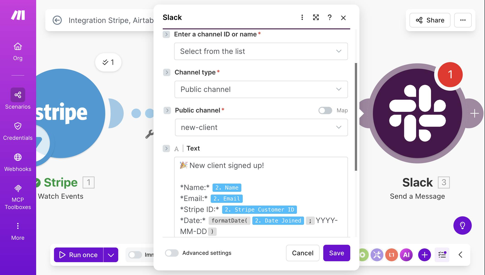
9. Test the automation — click "Run once" at the bottom of the Make.com canvas. The scenario starts listening for Stripe events. Switch to your Stripe Dashboard, go to Customers, and create another test customer with a different name and email. Switch back to Make.com — the scenario should fire within seconds, showing green checkmarks and a "1" badge on each module.
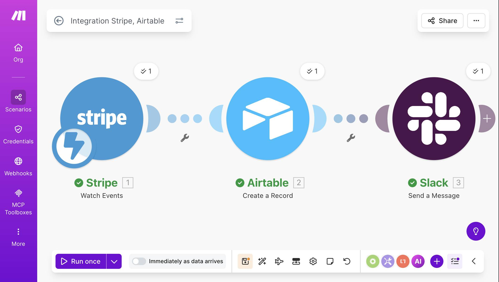
10. Verify the results — check your Airtable Client Tracker table. A new row should appear with the customer's name, email, Stripe ID, and today's date, with Status set to "New." Then check your Slack #new-client channel for the formatted notification.
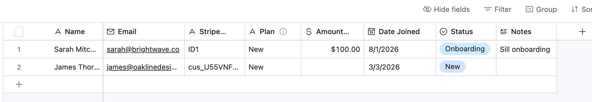
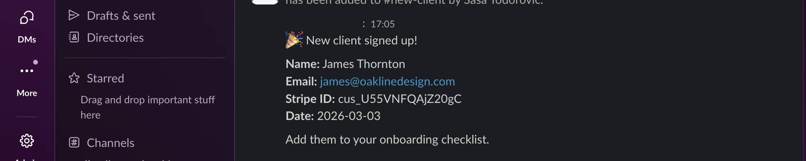
11. Turn the scenario on — click the toggle at the bottom-left of the canvas to activate the scenario. Since this uses a webhook trigger, it runs immediately when data arrives — no polling interval needed.
Try Make.com's free plan — 1,000 operations per month, enough for hundreds of new client signups. Start free on Make.com →
Frequently Asked Questions
Do I need a paid Stripe account to set this up?
No. You can build and test the entire workflow using Stripe's sandbox mode, which is free. When you're ready to go live, switch to your live Stripe API key and the automation works identically.
Is Airtable free for client tracking?
Yes. Airtable's free plan includes 1,000 records per base and up to 5 editors — more than enough for most small businesses. You only need to upgrade if you exceed 1,000 client records or need advanced features like custom automations.
What if I want to track the payment amount and plan name too?
Use checkout.session.completed as your Stripe trigger instead of customer.created. This event includes full payment details — amount, product name, and subscription info. The Airtable and Slack setup stays identical, you just map different fields.
How many Make.com operations does this use?
3 operations per new customer — one for the Stripe trigger, one for the Airtable record, one for the Slack message. On the free plan (1,000 operations per month), that's enough for over 300 new customers monthly.
Can I add more columns to Airtable later without rebuilding?
Yes. Add any new column to your Airtable base, then open the Airtable module in Make.com — the new field appears automatically. Map it and save. No need to rebuild the scenario from scratch.